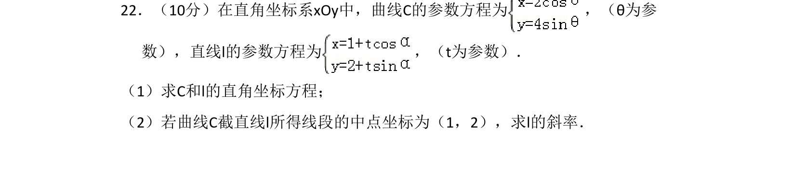
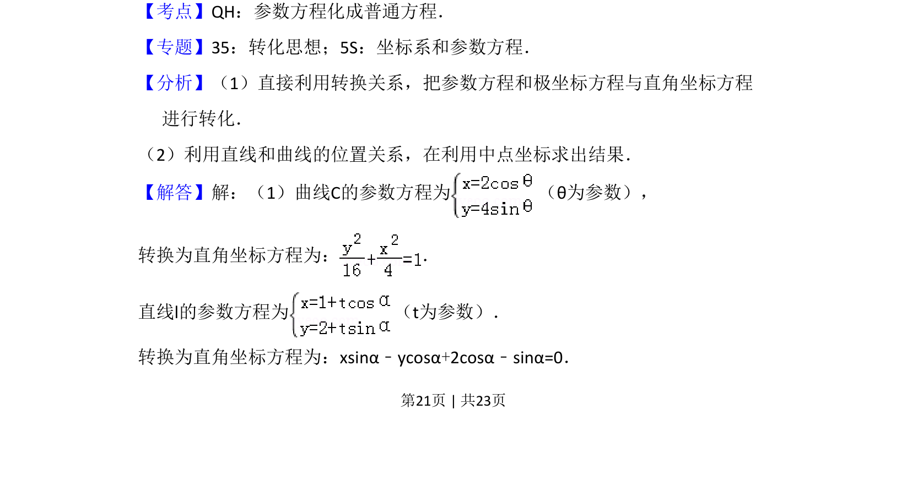
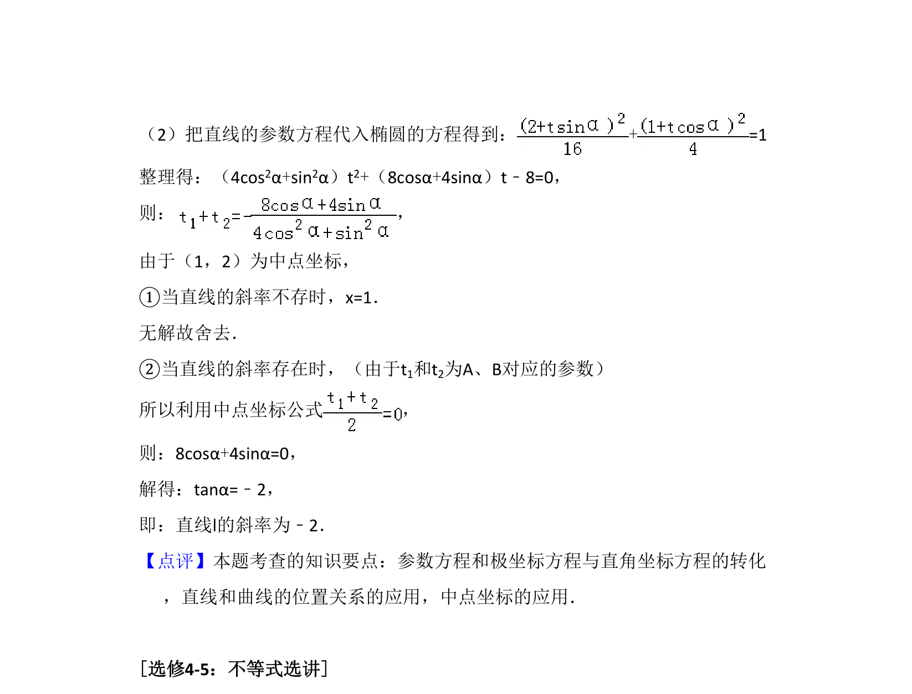

考点：参数方程化普通方程 直线与曲线位置关系 中点坐标公式

参数方程与直角坐标方程互化，结合中点坐标求直线斜率。


📄 原 PDF 第 21 页：
素材/真题/吉林/2008-2024·（吉林）数学高考真题/2018年高考数学试卷（理）（新课标Ⅱ）（解析卷）.pdf
22．（10分）在直角坐标系xOy中，曲线C的参数方程为 ，（θ为参 数），直线l的参数方程为 ，（t为参数）． （1）求C和l的直角坐标方程； （2）若曲线C截直线l所得线段的中点坐标为（1，2），求l的斜率．
【考点】QH：参数方程化成普通方程．菁优网版权所有 【专题】35：转化思想；5S：坐标系和参数方程． 【分析】（1）直接利用转换关系，把参数方程和极坐标方程与直角坐标方程 进行转化． （2）利用直线和曲线的位置关系，在利用中点坐标求出结果． 【解答】解：（1）曲线C的参数方程为 （θ为参数）， 转换为直角坐标方程为： ． 直线l的参数方程为 （t为参数）． 转换为直角坐标方程为：xsinα﹣ycosα+2cosα﹣sinα=0．